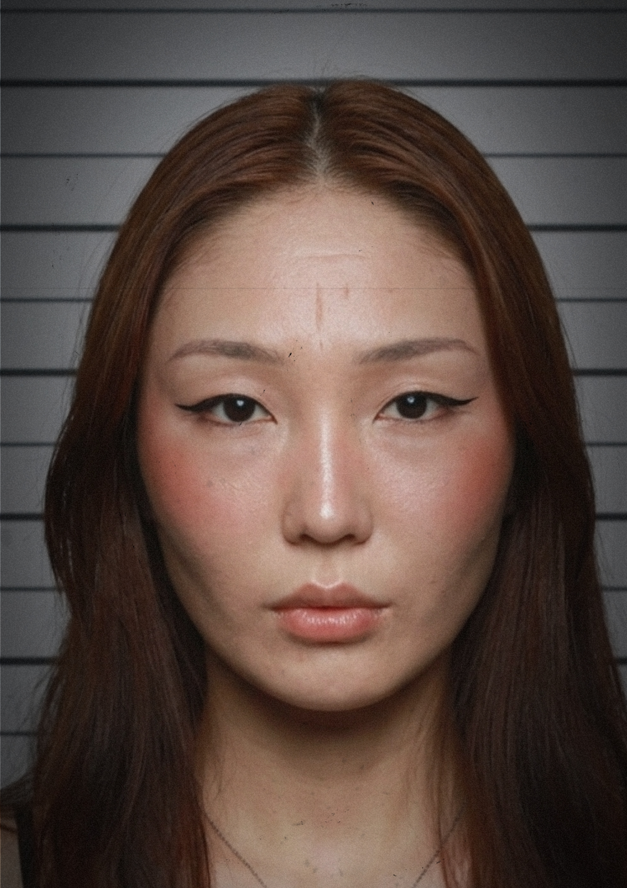

█
LOST_ARTIFACTS.EXE


The outbreak took many things.
Cities.
Homes.
Entire histories.
What remains of your story has been scattered across abandoned archives.
Recovered photographs, music recordings, journal entries, and witness
reports suggest that you were once an important member of a community.
Your task is simple:
Recover the missing fragments.
Remember who you were.
And discover why so many people were glad you survived another year.
Alive
12%
BALANCED
Subject enjoys creating art
Subject appears to have been important to many individuals
Additional information required
--------------------------------
SYSTEM NOTES
Subject survived the apocalypse.
Archive integrity: 100%

Decryption successful.
5 audio recordings recovered.

REC_001.mp3

REC_002.mp3

REC_003.mp3

REC_004.mp3

REC_005.mp3
RECOVERED MEMORY RECORDS: 11
█
█
█
[ tap to close ]